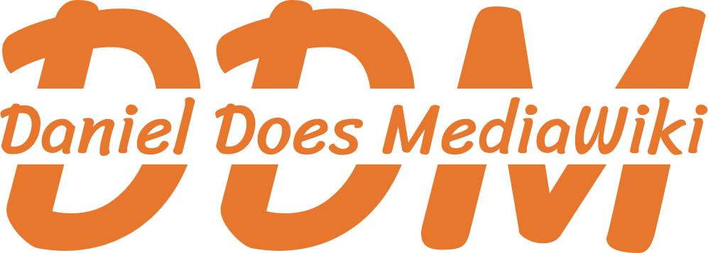

|  | Home · About · Contact |
Daniel Does MediaWiki (DDM) was founded by Daniel Scherzer on 31 January 2022.
Daniel first got interested in the MediaWiki software though Wikipedia, which uses the software. Since MediaWiki is open source, it is fairly easy to get started with, though obviously it took years for him to become the expert that he is today.
In addition to running DDM, Daniel is employed as a Technical Project Manager for WikiTeq, a MediaWiki-specific consulting firm. For information about Daniel's experience can be found on LinkedIn.